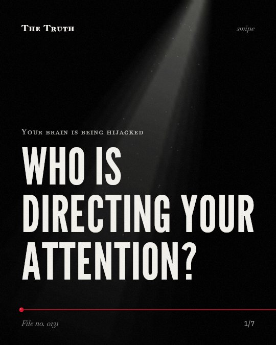

Your brain is being hijacked
Who is directing your attention?

Algorithms are linked to increased polarization and impulsive buying.
Studies show that personalized rankings and recommendation algorithms are linked to ideological extremism, emotional arousal, and impulsive purchasing.,,,
Supported. At least one solid peer-reviewed study. The evidence is mixed.
What the research found
Facebook’s 2018 “Meaningful Social Interactions” update is linked to increased ideological extremism and affective polarization.
“empirical evidence from survey data in Italy and the United States indicates that Facebook’s 2018 “Meaningful Social Interactions” update—which increased the emphasis on certain engagement metrics—contributed to increased ideological extremism and affective polarization.”
Observational study, 2026. Germano et al., Journal of Public Economics.
Greedy and biased recommendation algorithms are linked to consumers’ emotional arousal, impulsive buying behavior and post-purchase dissonance in AI-driven short video platforms.
“This study aims to examine the influence of greedy and biased recommendation algorithms on consumers’ emotional arousal, impulsive buying behavior and post-purchase dissonance in artificial intelligence (AI)-driven short video platforms”
Experiment, 2026. Truong et al., Journal of Systems and Information Technology.
Personalized rankings are linked to further amplified polarization.
“The framework is extended to include personalized rankings, demonstrating that personalization further amplifies polarization.”
Observational study, 2026. Germano et al., Journal of Public Economics.
Greater transparency regarding algorithmically selected or commercially prioritized content may help reduce impulsive purchasing and post-purchase dissonance.
“Greater transparency regarding algorithmically selected or commercially prioritized content, meaningful user-control mechanisms and less manipulative promotional practices may help reduce impulsive purchasing and post-purchase dissonance.”
Experiment, 2026. Truong et al., Journal of Systems and Information Technology.
Design choices shape your emotional state.
Platform updates like meaningful social interactions and personalized rankings are linked to greater polarization. Greedy algorithms can trigger emotional arousal and post-purchase dissonance.
Your choices may not be entirely your own.
The way content is prioritized may be designed to trigger specific emotions. Greater transparency about these commercial priorities may help you reduce impulsive behaviors.
This part is our reading of the evidence, not a finding.
The late night scroll.
You sit on your couch at 11 p.m. You watch short videos. You feel a sudden urge to buy something you do not need.
The honest summary
The sources show that specific algorithmic designs and personalization features are linked to increased polarization and emotional arousal, but they also suggest potential ways to reduce these effects.
One source is an observational study showing only associations, while the other is a study aiming to examine influences rather than providing definitive causal proof of all outcomes.
Who is making your decisions?
Sources
- Fabrizio Germano, Vicenç Gómez, Francesco Sobbrio (2026). Ranking for engagement: How social media algorithms fuel misinformation and polarization. Journal of Public Economics. Observational study, cited 14 times.
- Phi Hung Truong, Anh Dao Kim, Sinh Duc Hoang (2026). Greedy and biased algorithms in AI recommendation systems: effects on emotional arousal and impulsive buying. Journal of Systems and Information Technology. Experiment.
This file was researched and drafted by software, then checked by rules a model cannot talk its way around: each quote above was matched word for word against the paper, and every number had to appear in it. How files are made.